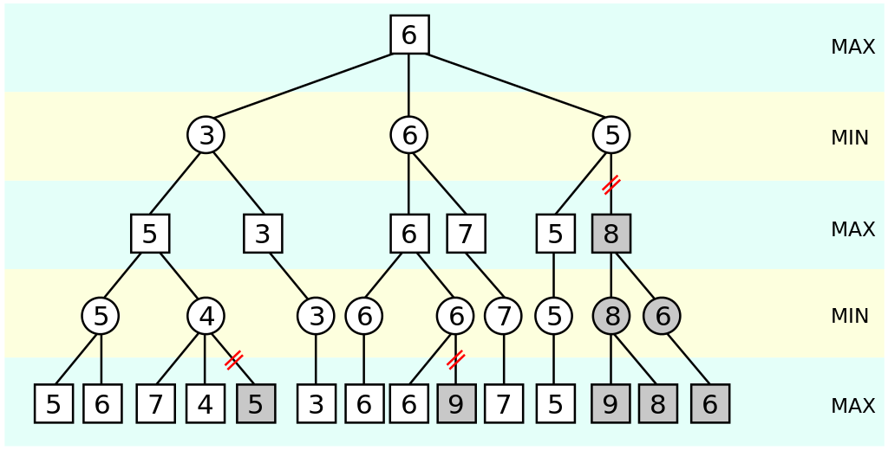

So, my friend @segfaultdev and I wrote a chess engine called cheese. Yay. Only problem, we didn't know about the UCI protocol or anything about chess programming. Which meant our engine was kinda useless. So, I started out trying to rewrite cheese in C following all the rules, using bitboards etc etc.... Until I realised that, I was writing this engine for fun, so why not try to write it in an easy language first, until I master the concepts behind chess programming, then maybe do a rewrite (yes, a rewrite again) in whatever language I want. So, I chose to write cheese V2.0 in python, using the python-chess library for move validation and board representation.
First of all, we need to identify the values of each piece. Personally, I want to have the piece evaluation function achieve these three things:
So, the values of each piece need to help the engine achieve the above three things. We can start with:
B > 3*P
N > 3*P
Next, we can put:
B > N
Combining 1 and 2, we can say that:
B > N > 3*P
For the final condition, we can put something like:
B + N = R + 1.5*PSo, an example piece value table that satisfies all of the above is:
P = 100
N = 320
B = 330
R = 500
Q = 900
K = 20000
So the simplest evaluation function will loop over every square of the board, and, if the piece is white, it will add to the value, and if the piece is black, it will subtract. A simple implementation is:
import chess
def eval_material(board):
material = 0
for square in chess.SQUARES:
if board.piece_at(square) == chess.PAWN:
material += 100 if piece.color else material -= 100
if board.piece_at(square) == chess.KNIGHT:
material += 320 if piece.color else material -= 320
if board.piece_at(square) == chess.BISHOP:
material += 330 if piece.color else material -= 330
if board.piece_at(square) == chess.ROOK:
material += 500 if piece.color else material -= 500
if board.piece_at(square) == chess.QUEEN:
material += 900 if piece.color else material -= 900
if board.piece_at(square) == chess.KING:
material += 20000 if piece.color else material -= 20000
return material
Using our evaluation function, we can start implementing a function that will search for the best move. We will be using the minimax algorithm. However, because of the exponential nature of the possibilities of chess games, and the limitations by our computing hardware, we can't search all the possible games in time. Therefore, we implement Alpha-Beta Pruning to speed up the process, which will stop searching deeper into the tree once it finds a bad value. See the below image:
As you can see, it stops searching deeper when it finds a value that is less than the previous one. (or bigger, depends on whether you are minimizing or maximizing). And, that's all, after implementing this we now have a playable chess engine. Of course there are still enhancements we can implement, like piece square tables and openings etc...
I hooked up cheese to lichess-bot, which uses the UCI protocol to communicate with the lichess API. You can challenge cheese here. You can see a full specification of the UCI protocol here. You can see the source code here.
In case you want to build your own chess engine, here are some helpful resources:
Until next time, happy coding (:
Go back